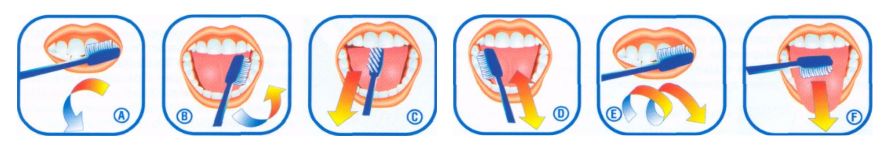

Догляд за брекетами
- Ортодонтичні зубні щітки для брекетів. Ключові особливості цього інструменту – шийка невеликої товщини і форма у вигляді латинської літери «V». Щітка призначена для чищення кожного зуба окремо, у всіх місцях, куди зможете дотягнутися, не зачіпаючи брекети. Втім, щетина тут дуже м'яка, тому навіть якщо трохи зачепити нашу залізну конструкцію на зубах, нічого страшного не станеться.
- Йоржики для брекетів. Цим приладом вже можна акуратно чистити під самими дугами. Робити це треба обов'язково, інакше в недоступних для зубних щіток місцях з'явиться наліт. А потім разом з вилікуваним прикусом ви заробите собі карієс.
- Флоси. Спеціальні зубні нитки, оптимізовані під ортодонтичний апарат. Використовуються для чищення простору між зубами. Вощені флоси краще проникають в особливо вузькі проміжки.
- Іригатор для брекетів. Украй корисна річ. Спеціальний прилад, що очищає зуби тоненьким, але сильним струменем води. Така чистка дуже гуманна по відношенню до зубів. Але при цьому вельми ефективна. Крім того, водночас здійснюється корисний масаж ясен. Є і ще один нюанс. Заряджати іригатор простою водою – це для непосвячених. Існують особливі зміцнюючі та знезаражуючі склади, в тому числі й з лікувальними травами.
Як правильно чистити зуби?
Який правильний метод чищення зубів? Правильний метод чищення зубів потребує, як мінімум, двох хвилин - Ви не помилилися, 120 секунд! Більшість дорослих є досить далекими від виконання цієї вимоги. Щоб навчитися визначати, скільки пройшло часу, для початку скористайтеся секундоміром. Для правильного чищення зубів користуйтеся короткими м'якими рухами, приділяючи при цьому особливу увагу лінії ясен, важкодоступним молярам, що знаходяться у глибині ротової порожнини, і ділянкам навколо пломб, коронок та інших видів зубних протезів. Нижче зазначено, як приділити необхідну увагу кожній ділянці ротової порожнини: Очистіть зовнішні поверхні верхніх, а потім і нижніх зубів; Очистіть внутрішні поверхні верхніх, а потім і нижніх зубів; Очистіть жувальні поверхні; Щоб освіжити подих, також обов'язково очистіть поверхню язика;
Жувальна гумка
Жувальна гумка виконує досить багато різних функцій, в тому числі це відмінний засіб для підтримки свіжого дихання.
Однак, не потрібно вірити рекламі і думати, що жувальна гумка - це панацея і тільки вона одна допоможе зберегти здоров'я всіх ваших зубів.
Чи є користь? У жувальної гумки можуть бути плюси. По-перше, використовуючи жувальну гумку, ви сприяєте виділенню не тільки слини, а й паралельно шлункового соку, що поліпшує травлення. До того ж жувальна гумка відмінно очищає зуби від залишків і шматочків їжі залишилися на них. А деякі «гумки» дозволяють зберегти ваше дихання, так що тут реклама не лукавить, головне - не перестаратися.
А який шкода? Всі ці плюси жувальній гумці працюватимуть тільки при короткочасному її використанні. Єдине розумне правило - це жувати гумку тільки після прийому їжі і не більше 15 хвилин. Жувати жувальну гумку довше, та й ще на голодний шлунок небезпечно. Будь-яка жуйка відмінно вбирає токсичні речовини, а іноді такі речовини входять до складу самої гумки, що легко може потрапити до вас в шлунок зі слиною. І, звичайно ж, жувальна гумка не врятує вас від карієсу і не лікує зуби. Ці процеси, на жаль, поза її компетенції.